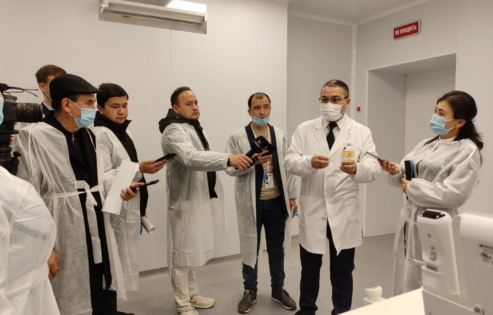
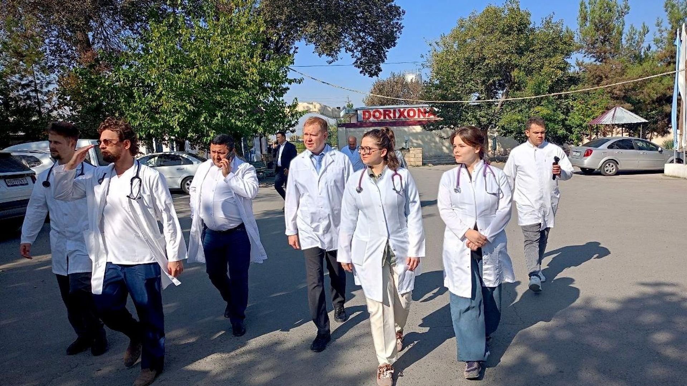

ДАВЛАТОБОД ТУМАНИ 5-ПОЛИКЛИНИКАСИНИНГ ВЕБ-САҲИФАСИ
Асосий саҳифа
Шифокор қабулига ёзилиш
Янгиликлар
Шикоят ва мурожаатлар
Биз ҳақимизда
Поликлиника ҳаётидан фотолавҳалар
Poliklinikaning zamonaviy va shinam binosi

Shifokorlarimiz bemorlarga tibbiy maslahat bermoqda

Zamonaviy diagnostika va uskunalar xonasi
Laboratoriya va tahlil bo'limi
❮
❯